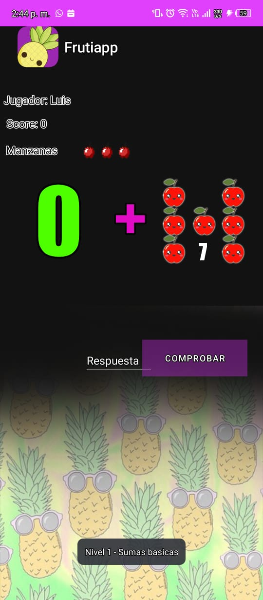
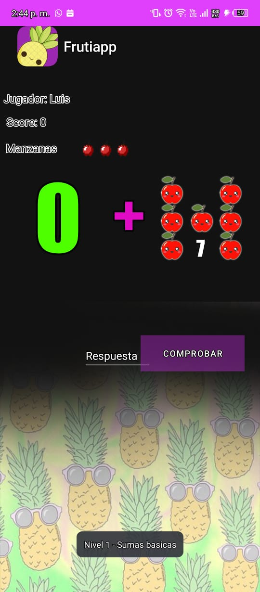

Sobre mí
Soy un desarrollador de software apasionado y dedicado, con 26 años de
edad y experiencia tanto en el desarrollo frontend como backend. Mi
trayectoria académica y profesional me ha proporcionado un sólido
dominio de una variedad de tecnologías y herramientas fundamentales
para el éxito en el campo del desarrollo de software.
Con una formación universitaria en informática, he adquirido
conocimientos esenciales en el manejo de hardware y software, así como
un profundo entendimiento de los lenguajes de programación. Mi enfoque
se centra en la creación de soluciones móviles y web innovadoras que
satisfagan las necesidades y expectativas del usuario.
Durante mis años de experiencia, he trabajado con una amplia gama de
tecnologías, entre las que se incluyen:
Habilidades
- Node.js: He utilizado Node.js durante 4 años para desarrollar aplicaciones backend escalables y eficientes.
- Flutter (mobile y web): Como un entusiasta de Flutter, he creado aplicaciones móviles y web atractivas y de alto rendimiento utilizando este framework durante 3 años.
- JavaScript: Con 5 años de experiencia en JavaScript, he desarrollado aplicaciones frontend dinámicas e interactivas, así como aplicaciones backend robustas.
- PHP: Con 3 años de experiencia en PHP, he construido sistemas web complejos y funcionales.
- HTML: Con 6 años de experiencia en HTML, tengo un dominio sólido en la estructura y semántica de las páginas web.
- CSS: He trabajado con CSS durante 6 años, creando interfaces de usuario atractivas y responsivas.
- GraphQL: Con 2 años de experiencia en GraphQL, he implementado APIs eficientes y flexibles para el intercambio de datos entre cliente y servidor.
Portafolio
-
Aplicación web para la gestión de tareas
Esta aplicación permite a los usuarios crear, editar y eliminar tareas. También permite organizar las tareas por categorías y prioridades.
Frutiapp
El proyecto "FrutiApp" es una aplicación móvil educativa diseñada específicamente para niños en edad preescolar y de primaria (3-10 años) que están aprendiendo conceptos matemáticos básicos, como la suma, resta y multiplicación. La aplicación tiene como objetivo proporcionar un entorno interactivo y divertido donde los niños puedan practicar y reforzar sus habilidades matemáticas de una manera lúdica y atractiva.
 

-
Aplicación móvil para la gestión de finanzas personales
Esta aplicación permite a los usuarios registrar sus ingresos y gastos, así como establecer presupuestos y metas financieras.
-
Sitio web para una empresa de turismo
Este sitio web permite a los usuarios reservar tours y actividades, así como obtener información sobre los diferentes destinos turísticos.
Contacto
Si tienes alguna pregunta o deseas contactarme para un proyecto, puedes hacerlo a través de los siguientes medios: